Objectives
QlikView is a user driven business intelligence tool that helps people make decisions based on a variety of insights drawn from data, people and the environment.
Business discovery helps users ask and answer their own questions and follow their own paths to insight. It also enables teams to reach decisions collaboratively.
These labs will introduce you to QlikView, teaching you how to create dashboards with interactive components.
Introduction to QlikView
QlikView applications have .qvw extensions.
Download the movie database. Open QlikView on your laptop by finding it in your programs menu.
From the file menu choose open, navigate to the the folder where you saved the QlikView movie application.
Read the intro page and then click get started. This brings you to the next tab called How QlikView works. Practice selecting a fruit and seeing how the displayed data is presented.
Now explore the traditional OLAP tab. click the magnifying glass by the word "Director", and then type "Wo". A search box displays with a list that includes Woody Allen.
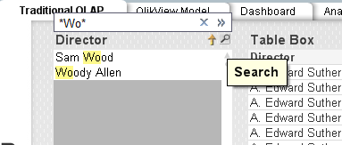
Click Woody Allen. A list containing Woody Allen's films displays.
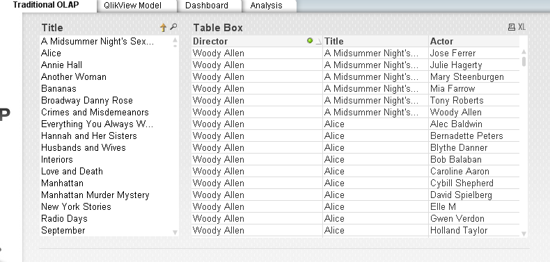
With traditional OLAP the navigation path to analyse data is predefined. Usually it is a top down hierarchy.
Next click Clear and then go to the QlikView Model tab.
Click the magnifying glass in the Title field. Type "Bananas", and then select it.
You can see Bananas shows in green, this is the data you have choosen, to the left you can see Woody Allen's name in white this means that data is associated to Bananas and the other directors in the list are grey and thus not associated. To the right you can see a list of actors in white, all of whom are in the film Bananas.
Make sure you still have Bananas selected in the title box, next click on the actor Woody Allen. You can then unclick the Bananas selction and it will show you all the films and associated directors that woody allen has been an actor. You can see he has played in movies by two other directors.

In the directors list click on Woody Allen, you can then see the 17 movies he acted and directed.
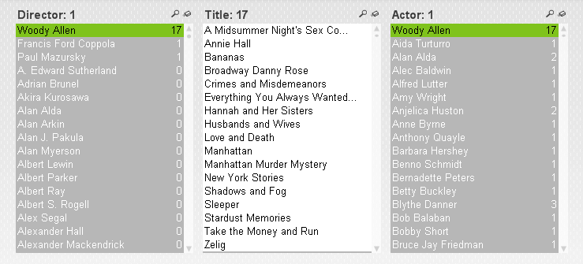
Searching
QlikView searches for field values matching a text string that you type. When you start typing, by default it is surrounded by two * wildcard characters. You can remove either or both of the wildcards or use different ones, such as ? for any single character.
You can also do numeric searches.
A fuzzy search
uses the ~ tilda, it is particularly useful where spelling mistakes in data entry is a problem. It can help you find values that are near-identical to each other.
In the movie application, first clear all selections. On the QlikView model sheet, click the magnifying glass on the Director List box. Clear both asterisks **, and then type ~bargman. Check the results.
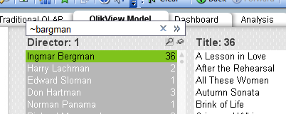
Select Excluded
is an important search feature in QlikView. It allows you to, for example, search for products that have not been sold in certain regions or customers that haven't placed an order on a certain date.
If you want to pick a film that does not have a particular actor. The actor field contains over 4800 actors so it would be hard to select only those you wish to see. With select excluded you select the actor you want to exclude, right click and then choose "select excluded"
Associative searches
is another powerful feature in QlikView, it allows you to search related fields that are not presented in the list box. When you click on the double cheveron >> it will show you any related fields.
Using the QlikView model sheet clear all selections, click the Title list box and type 1950. Click the chevron >> and click 1950's in the Decade field.
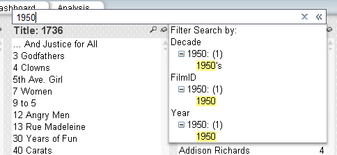
Then type 4 and choose the Rating field.
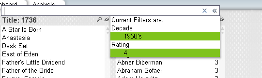
Then press Enter.

The title list box displays the films from the 1950's with a rating of 4. Click the analysis tab, and click Movie List. The table shows Title, Year, Minutes, Rating and Director for the selected films.
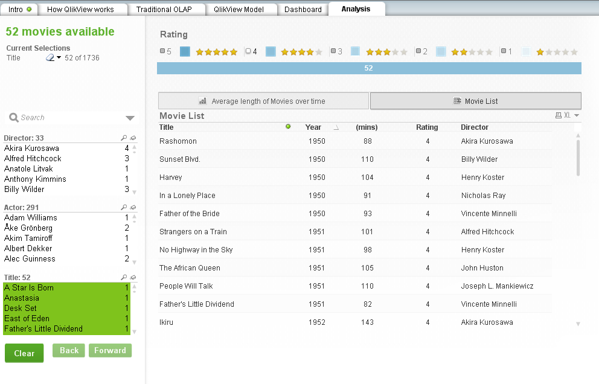
Expressions
You can use expressions in the searches such as =, <, >
Clear all selections, back to Qlikview model tap, type the following into the Title list box:
=Rating=4 and Year=1950Press return. Note that the string is evaluated if there is a one-to-one relationship between the field you search in and the related fields. In this case title and rating has a one to one relationship and title and year has a one to one relationship.
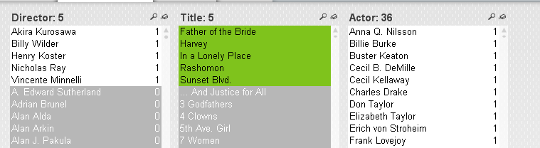
"AND" search
To search for movies with Sofia Coppola and Nicolas Cage appearing together we need to select both actors. If you select Nicolas Cage in the actor box and then select Sofia Coppola you cancel the value you selected first. Type Nicolas Cage, click shift key, type Sofia Coppola, you must press the Ctrl key when selecting more than one.
The resulting list displays films where either Nicolas Cage or Sofia Coppola appear.
If we want to see films that star both of them we have to do the following:
Clear all selections. Type and select Sofia Coppola in the Actor list box. Next right click in the Title list box and choose Clear Other Fields. This means the movies that Sofia Coppola stars in are selected green and the Actor list has gone all white ready for a new selection. Type in Nicolas Cage. The title list now shows the two movies they star in together.
ABC Sales application
ABC Apparel, Inc is an international apparel company. They are looking for a QlikView application for the analysis of sales.
User Roles
CEO (Chief Executive Officer) KPI's and measures:
- Trend of total sales and number of orders CYTD (current year to date) and how this compares to LYTD (last year to date)
- Sales by Division and Category
- Number of orders CYTD and how this compares to LYTD
- Margin percent by product group and by country
Examples of use scenarios:
- How the CYTD sales are in comparison to last year this time as well as monthly sales
- What does the sales trend look like?
- How do the CYTD sales vary by division or region? Are there regions that are performing well in sales that can offer help to regions that are not performing that well?
- Has the order value improved since the previous month/year?
- Has the number of orders improved since the previous month/year?
CMO (Chief Marketing Officer) measures and dimensions:
- CYTD customer performance versus LYTD
- Product performance CYTD versys LYTD
- Trends
- Number of orders per product category
- Last orders placed
Examples of use scenarios:
- The marketing department would like to run a campaign highlighting top-selling products in the regions. Therefore it needs to determine which products are top sellers in each region. Does this differ by region?
- Marketing would like to reach out to customers who have not made a purchase in the past six months. They need to determine who these customers are.
- What is the average number of orders each customer has made and what is the average value of these order? Is there a correlation between these two?
- Are there many one visit customer who have only placed an order with the company once? The CMO needs to view the customer details of these customers. Did these customers receive discounts with their orders?
Sales Manager measures and dimensions:
- CYTD sales persons' performance versus LYTD
- Top and bottom sales persons - based on sales
- Sales persons' performance over time
Examples of use scenarios:
- Who are the top five and the bottom five sales persons?
- What are the top products for the top slaes persons?
- Do these sales persons tend to have customers who place multiple orders or single orders?
- How is the discount related to average deal size?
The application
You are going to build a single application for the CEO, CMO and sales manager. In a real world business scenario, it is more likely that you design separate applications for the distinct user group. But for this exercise you will design one application.
ABC apparel are interested in analysing their data over time. Time must be displayed based upon the order date field in the dataset. Analysis must be possible based upon Year, Month or Quarter values for the entire dataset. In order to filter the data, these fields are defined as the main dimensions:
- Customer country
- Sales person
- Product category
- Product
- Customer
Key Measures
- Sales KPI: total of the LineSalesAmount sum(LineSalesAmount)
- Sales CYTD KPI: total of the LineSalesAmount field starting from the beginning of the current year to to the present day Sum(LinesSalesAmount * CYTDFlag)
- Margin KPI: total of the margin field sum(Margin)
- Margin CYTD KPI: total margin from beginning of current year to present day sum(Margin * CYTDFlag)
- Margin % KPI: percentage of sales containing margin sum(Margin)/sum(LineSalesAmount)
- Orders KPI: the number of individual orders count(DISTINCT OrderID)
- Average Deal size: sales divided by orders sum(LineSalesAmount)/count(DISTINCT OrderID)
- Products: number of unique products sum(RecNo_Products)
- Discount: average of the discount in percentage avg(discount)
Dashboard Design
D-A-R concept: We recommend you use the D-A-R (Dashboard, Analysis, Report) concept. Laying out the QlikView application according to D-A-R helps the user to get an overview of the situation, then flow into details required for analysis, and then, if needed, gets into the greater details of reporting. You saw this in the movies application. This is not a linear process, users can navigate across pages at any time.
Data Filtering
We will continue with the same data, Olympic medal winners to apply filters on this file. - Put cursor on spreadsheet - Click Data ribbon and choose filter icon.
- Drop down boxes have been placed in the columns.
- For example, if you click on drop down box for the column Year, it contains all possible values of years that occur in that column.
- Similarly, if you click on the drop down box against City, all the possible cities that occur in that column. If you click on sport, all possible sports that occur in that column and so on.
- How do I use the filters – if you want to see the medals won by Japan. Go to country column, click the drop down box, Click on the Select All cell there, it deselects all the countries. Now select Japan.
- Notice the small icon at filter box, so you can see filter has been applied.
TASK 1:
- Continuing here, now filter on Sydney Olympics… what do you select?
- Year – 2000
- Further filter you can look at gold medals… how many??
Result
- What about the women who won gold medals for Japan? How many?
- The data is still there, it's just hidden. To unfilter – go to data and click clear. It will clear all filtering.
TASK 2:
Which country won maximum medals gold medals in boxing in Sydney 2000 Olympics?
Pivot tables
A pivot table is a program tool that allows you to reorganize and summarize selected columns and rows of data in a spreadsheet or database table to obtain a desired report. A pivot table doesn't actually change the spreadsheet or database itself. It’s a very powerful data summarisation tool. It’s a form of reports and online analytical processing (OLAP).
Be aware they are dynamic, so each time the data changes in you data file, the summary gets updated. Using the same file, Olympics data. We will use Pivot tables to get some useful summaries from the data. Answer the following question: “I wish to find out how many medals were won in bronze, silver, gold medals in each of these countries across all years?”
• Insert the Pivot Table (Insert menu)
• Make sure all data selected.
• Choose new worksheet
• The Pivot table is placed on the worksheet. You can see the fields on your right.
• You can drag fields to the boxes columns, rows underneath the field list.
• Follow this...
- In this example, Canada has won a total of 304 medals over this period of time, broken up into bronze, gold, silver as per the numbers given.
- One thing to keep in mind is that if there is a team sport, and that team sport consists of, let's say, 11 members, 10 members and so on, and if a country won the medal in that team sport, then all the individual members of the team are listed as medal winners in this file.
Sort
- You can sort the column labels by clicking outside of pivot table which disables the right hand side pivot table options.
- Choose a reverse sorting option - You can change order also by manually selecting a column, e.g. silver, drop the column on top of one of the other to show a different sequence:
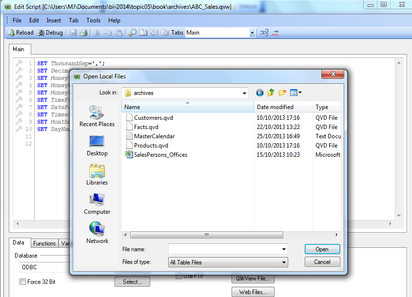
TASK 3:
- What if we only want the middle tally for the Sydney Olympics in year 2000?
- We can do that by using the report filter option on the right hand side.
- We wish to filter this pivot table using that year, so select the year variable. Drag it and place it in the report filter area.
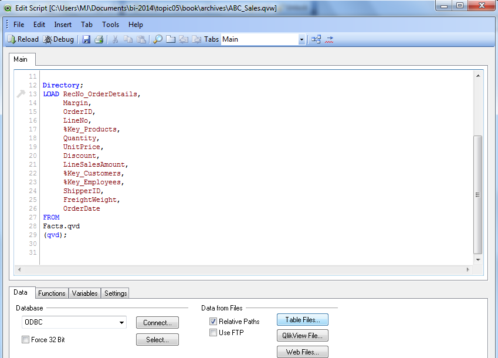
TASK 4:
- Do a Sydney Olympics medal tally only for the sport of boxing:
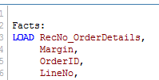
- What if we want the medal tally broken up across all the sports?
- Show the medals for each sport in each country in 2000 Sydney Olympics?